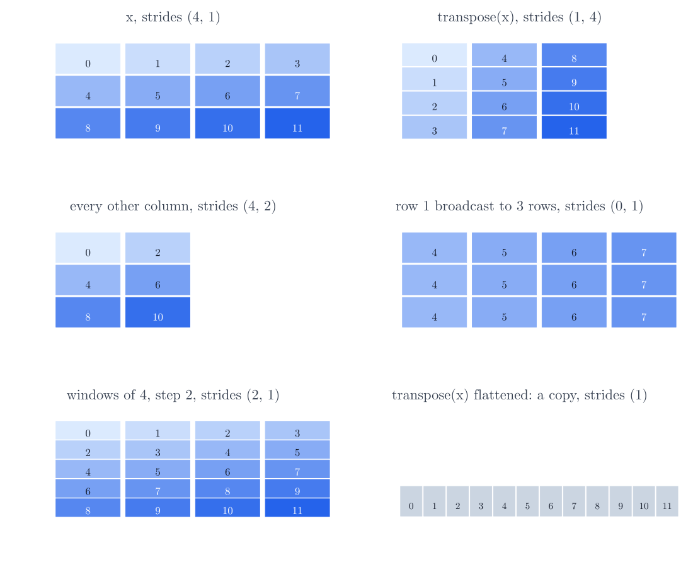
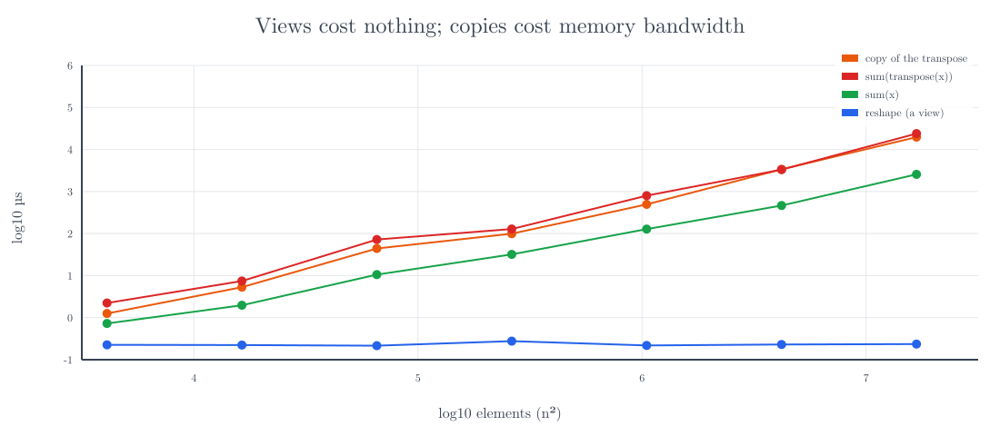
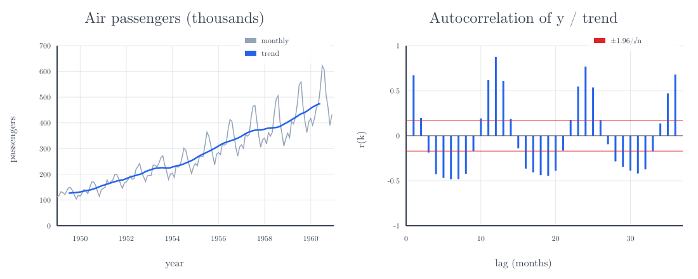

Tensors as Strided Views: Shapes, Strides, Broadcasting and When a Reshape Copies
Abstract
A tensor is a buffer of numbers plus three pieces of metadata: a shape, strides and an offset. Element \((i_0,\dots,i_{r-1})\) lives at storage position
\(\text{offset}+\sum_k i_ks_k\). Transposing, slicing, broadcasting and windowing change only the metadata, so they cost a fraction of a microsecond at any size.
A copy costs time proportional to the data, about 10 ms for a \(4096\times4096\) float32 transpose in the run below. This report derives the exact condition under which a reshape
can share storage. Within each minimal group of axes that merge, the old strides must be contiguous among themselves. The library now applies that rule in nn::reshape, which previously copied
every non-contiguous input. On 20 000 random strided tensors and target shapes, the rule agrees with a brute-force search for any stride vector in every case.
The library also gained nn::sliding_window (a differentiable zero-copy unfold), nn::may_share_memory, nn::can_view and nn::storage_bytes.
On the monthly air-passenger series, a 13-month sliding window over 1152 bytes of storage gives the centred \(2\times12\) moving average without materialising its 13 728 bytes.
A reshape view gives the seasonal factors and pairs of slices give the autocorrelations, all matching R's decompose and acf to three decimals.
The problem
A first look at any array library covers construction, shapes and dtypes, slicing, arithmetic with broadcasting, and the shape operations: reshape, transpose, concatenate
and stack. The useful question behind each one is whether it moves data. In datamunge::nn, as in NumPy and PyTorch, a tensor is a cheap handle to a shared
buffer (Harris et al., 2020; Paszke et al., 2019). Many operations return a new handle on the same buffer. That is fast and memory-free, but a write through one handle is then seen by the others.
Knowing which operations share memory, and why, is what makes the rest of the library predictable.
This report replaces the original example examples/nn/0_foundations/0.1_tensors_graphs_sessions/tensor_basics.cpp. That example printed each operation's result and
checked a few values. All of its computations reappear here, together with the metadata that explains them.
The method
The address formula
A tensor of shape \((n_0,\dots,n_{r-1})\) with strides \((s_0,\dots,s_{r-1})\) and offset \(o\) reads element \(i=(i_0,\dots,i_{r-1})\) from storage position
A freshly created tensor is contiguous (row-major): \(s_{r-1}=1\) and \(s_k=n_{k+1}s_{k+1}\), so \(s_k=\prod_{j>k}n_j\). Each view operation is a rule for new metadata:
- transpose permutes the pairs \((n_k,s_k)\);
- slicing axis \(k\) from \(a\) with step \(h\) sets \(o\leftarrow o+as_k\), \(s_k\leftarrow hs_k\) and \(n_k\leftarrow\) the count;
- broadcasting a length-1 axis to length \(m\) sets its stride to 0, so all \(m\) positions read the same number;
- a sliding window of length \(w\) and step \(h\) along axis \(k\) replaces \(n_k\) by the number of windows \(\lfloor(n_k-w)/h\rfloor+1\) and \(s_k\) by \(hs_k\), and appends a new axis \((w,s_k)\). Consecutive windows then overlap in storage.
None of these touches the buffer, so each costs the same at every size.
When can a reshape be a view?
A reshape keeps the row-major order of the elements and changes the shape. Write \(p_0,p_1,\dots,p_{N-1}\) for the storage positions of the elements in that order. A view with new shape \(m\) exists if some strides \(\sigma\) give \(o+\sum_lj_l\sigma_l=p_{L(j)}\), where \(L(j)\) is the row-major index of \(j\) in \(m\). Ignore axes of length 1, whose strides never matter. Then split the old and new shapes into the shortest consecutive groups with equal products. For example, \((4,6)\to(2,2,6)\) splits into \(\{4\}\to\{2,2\}\) and \(\{6\}\to\{6\}\).
Sufficiency. Suppose that within each old group every stride equals the next axis's length times the next stride. Then the group behaves as a single axis of length \(P\) (the group product) and stride \(s_q\) (its last stride): its elements sit at \(s_q\cdot\ell\) for \(\ell=0,\dots,P-1\), relative to the group's origin. Any row-major split of that axis is a view, with strides \(\sigma_l=s_q\prod_{l'>l,\,l'\in\text{group}}m_{l'}\).
Necessity. Suppose instead that two adjacent old axes in a group are not contiguous, \(s_k\ne n_{k+1}s_{k+1}\). The group is minimal, so some new axis in it spans the boundary between old axes \(k\) and \(k+1\). Stepping along that axis must then move by a constant stride both within a run of axis \(k+1\) and across the end of that run, which the mismatch forbids.
This is the rule NumPy applies before falling back to a copy. nn::view_strides implements it, nn::can_view reports it, and nn::reshape now uses it.
Before this change reshape copied whenever its input was not contiguous. squeeze and expand_dims are reshapes, so even adding a length-1 axis to a transpose
copied the whole tensor.
Broadcasting and dtypes
Two shapes broadcast by aligning them on the right. Each pair of lengths must be equal or contain a 1, and the result takes the larger. A length-1 or missing axis is read with stride 0, so broadcasting never copies. Mixed dtypes promote along \(\text{bool}<\text{int32}<\text{int64}<\text{float32}<\text{float64}\). Casting a float to an integer truncates toward zero. Float32 has a 24-bit significand, so it represents every integer up to \(2^{24}=16\,777\,216\), half of them between \(2^{24}\) and \(2^{25}\), a quarter between \(2^{25}\) and \(2^{26}\), and so on. Promoting int64 with float32 to float32 can therefore lose integer precision.
Simple examples
Views of a 3 by 4 matrix
Let \(x\) be the \(3\times4\) matrix with \(x_{ij}=4i+j\), stored row by row, so each value is also its storage position.
#include <dm/dm.hpp>
namespace nn = dm::nn;
using nn::Tensor;
std::string shape_text(const nn::Shape& s) {
std::string out = "(";
for (std::size_t i = 0; i < s.size(); ++i) out += (i ? ", " : "") + std::to_string(s[i]);
return out + ")";
}
int main() {
std::filesystem::create_directories("build");
// The 3 x 4 matrix whose element (i, j) is 4i + j, stored row by row.
const Tensor x = nn::reshape(nn::arange(0, 12), {3, 4});
struct View { std::string expr; Tensor t; };
const std::vector<View> views = {
{"x", x},
{"transpose(x)", nn::transpose(x)},
{"slice_axis(x, 1, 0, 4, 2)", nn::slice_axis(x, 1, 0, 4, 2)},
{"slice_axis(x, 0, 1, 3)", nn::slice_axis(x, 0, 1, 3)},
{"broadcast_to(select(x, 0, 1), {3, 4})", nn::broadcast_to(nn::select(x, 0, 1), {3, 4})},
{"sliding_window(flatten(x), 0, 4, 2)", nn::sliding_window(nn::flatten(x), 0, 4, 2)},
{"reshape(transpose(x), {2, 2, 3})", nn::reshape(nn::transpose(x), {2, 2, 3})},
{"reshape(transpose(x), {12})", nn::reshape(nn::transpose(x), {12})},
};
std::print("| expression | shape | strides | offset | contiguous | shares x's storage | storage bytes | values |\n");
std::print("| :--- | :--- | :--- | ---: | :--- | :--- | ---: | :--- |\n");
for (const auto& v : views)
std::print("| `{}` | {} | {} | {} | {} | {} | {} | {} |\n", v.expr, shape_text(v.t.shape()), shape_text(v.t.strides()), v.t.offset(),
v.t.is_contiguous() ? "yes" : "no", nn::may_share_memory(v.t, x) ? "yes" : "no (copy)", nn::storage_bytes(v.t), v.t.values_str(12));
// The original example's computations.
const Tensor cube = nn::reshape(nn::arange(0, 4, 0.5, nn::DType::Float64), {2, 2, 2});
const Tensor a = nn::tensor({{1, 2, 3}, {4, 5, 6}});
std::print("\n| computation | result |\n| :--- | :--- |\n");
std::print("| `cube.at({{1, 0, 1}})`, cube = arange(0, 4, 0.5) as [2, 2, 2] | {} |\n", cube.at({1, 0, 1}));
std::print("| `a * 1.7` | {} |\n", (a * 1.7).values_str(8));
std::print("| `cast(a * 1.7, Int32)` | {} |\n", nn::cast(a * 1.7, nn::DType::Int32).values_str(8));
std::print("| `cast(-(a * 1.7), Int32)` | {} |\n", nn::cast(-(a * 1.7), nn::DType::Int32).values_str(8));
std::print("| `a + tensor({{10, 20, 30}})`, [2, 3] + [3] | {} |\n", (a + nn::tensor({10, 20, 30})).values_str(8));
std::print("| `tensor({{10, 20, 30}}) + tensor({{{{1}}, {{-1}}}})`, [3] + [2, 1] | {} |\n",
(nn::tensor({10, 20, 30}) + nn::tensor({1.0, -1.0}, {2, 1})).values_str(8));
std::print("| `norm(a)` | {:.6f} (√91 = {:.6f}) |\n", nn::norm(a).item(), std::sqrt(91.0));
try { (void)(a + nn::tensor({1, 2})); } catch (const std::exception& e) { std::print("| `a + tensor({{1, 2}})`, [2, 3] + [2] | throws: {} |\n", e.what()); }
std::print("| dtype of `int32 + float32`, `int64 + float32`, `bool + int64` | {}, {}, {} |\n",
nn::dtype_name(nn::promote_types(nn::DType::Int32, nn::DType::Float32)), nn::dtype_name(nn::promote_types(nn::DType::Int64, nn::DType::Float32)),
nn::dtype_name(nn::promote_types(nn::DType::Bool, nn::DType::Int64)));
// Figure: each view of x drawn as its logical grid, each cell labelled with the storage position it reads.
std::vector<dm::graphics::RPlot> panels;
const std::vector<std::pair<std::size_t, std::string>> shown = {
{0, "x"}, {1, "transpose(x)"}, {2, "every other column"}, {4, "row 1 broadcast to 3 rows"},
{5, "windows of 4, step 2"}, {7, "transpose(x) flattened: a copy"}};
for (const auto& [p, label] : shown) {
const auto& v = views[p];
Tensor t = v.t.dim() == 1 ? nn::reshape(v.t, {1, v.t.shape()[0]}) : v.t;
const std::int64_t rows = t.shape()[0], cols = t.shape()[1];
const bool copy = !nn::may_share_memory(v.t, x);
auto plot = dm::graphics::RPlot::create();
for (std::int64_t i = 0; i < rows; ++i)
for (std::int64_t j = 0; j < cols; ++j) {
const std::int64_t pos = t.offset() + i * t.strides()[0] + j * t.strides()[1];
const double f = static_cast<double>(pos) / 11.0;
const dm::graphics::RGB fill = copy ? dm::graphics::RGB{203, 213, 225}
: dm::graphics::RGB{int(219 - 182 * f), int(234 - 135 * f), int(254 - 19 * f)};
const double y = static_cast<double>(rows - 1 - i), xx = static_cast<double>(j);
plot.polygon({xx + 0.04, xx + 0.96, xx + 0.96, xx + 0.04}, {y + 0.04, y + 0.04, y + 0.96, y + 0.96}, fill);
plot.text(xx + 0.5, y + 0.36, std::to_string(pos), f > 0.55 && !copy ? dm::graphics::RGB{255, 255, 255} : dm::graphics::RGB{17, 24, 39}, cols > 6 ? 16 : 18);
}
plot.x_limits(0, std::max<std::int64_t>(cols, 4)).y_limits(0, std::max<std::int64_t>(rows, 3)).hide_axes();
plot.title(std::format("{}, strides {}", label, shape_text(v.t.strides())));
panels.push_back(plot);
}
auto fig = dm::graphics::RLayout::create(3, 2);
for (auto& p : panels) fig.add(p);
fig.size(1100, 900).fit_panels();
fig.save("build/tensor_basics_views.svg");
}| expression | shape | strides | offset | contiguous | shares x's storage | storage bytes | values |
|---|---|---|---|---|---|---|---|
x | (3, 4) | (4, 1) | 0 | yes | yes | 48 | [[0, 1, 2, 3], [4, 5, 6, 7], [8, 9, 10, 11]] |
transpose(x) | (4, 3) | (1, 4) | 0 | no | yes | 48 | [[0, 4, 8], [1, 5, 9], [2, 6, 10], [3, 7, 11]] |
slice_axis(x, 1, 0, 4, 2) | (3, 2) | (4, 2) | 0 | no | yes | 48 | [[0, 2], [4, 6], [8, 10]] |
slice_axis(x, 0, 1, 3) | (2, 4) | (4, 1) | 4 | yes | yes | 48 | [[4, 5, 6, 7], [8, 9, 10, 11]] |
broadcast_to(select(x, 0, 1), {3, 4}) | (3, 4) | (0, 1) | 4 | no | yes | 48 | [[4, 5, 6, 7], [4, 5, 6, 7], [4, 5, 6, 7]] |
sliding_window(flatten(x), 0, 4, 2) | (5, 4) | (2, 1) | 0 | no | yes | 48 | [[0, 1, 2, 3], [2, 3, 4, 5], [4, 5, 6, 7], [6, 7, 8, 9], [8, 9, 10, 11]] |
reshape(transpose(x), {2, 2, 3}) | (2, 2, 3) | (2, 1, 4) | 0 | no | yes | 48 | [[[0, 4, 8], [1, 5, 9]], [[2, 6, 10], [3, 7, 11]]] |
reshape(transpose(x), {12}) | (12) | (1) | 0 | yes | no (copy) | 48 | [0, 4, 8, 1, 5, 9, 2, 6, 10, 3, 7, 11] |
| computation | result |
|---|---|
cube.at({1, 0, 1}), cube = arange(0, 4, 0.5) as [2, 2, 2] | 2.5 |
a * 1.7 | [[1.7, 3.4, 5.1], [6.8, 8.5, 10.2]] |
cast(a * 1.7, Int32) | [[1, 3, 5], [6, 8, 10]] |
cast(-(a * 1.7), Int32) | [[-1, -3, -5], [-6, -8, -10]] |
a + tensor({10, 20, 30}), [2, 3] + [3] | [[11, 22, 33], [14, 25, 36]] |
tensor({10, 20, 30}) + tensor({{1}, {-1}}), [3] + [2, 1] | [[11, 21, 31], [9, 19, 29]] |
norm(a) | 9.539392 (√91 = 9.539392) |
a + tensor({1, 2}), [2, 3] + [2] | throws: cannot broadcast shapes [2, 3] and [2] |
dtype of int32 + float32, int64 + float32, bool + int64 | float32, float32, int64 |

Each row of the table follows from the rules above. For example, transpose(x) swaps the pairs \((3,4)\) and \((4,1)\) to give shape \((4,3)\) and strides \((1,4)\).
Its element \((2,1)\) is at \(0+2\cdot1+1\cdot4=6\), which is \(x_{12}\). Every other column multiplies the column stride by 2. Taking rows 1 and 2 moves the offset to
\(1\cdot4=4\) and leaves a contiguous block. Row 1 broadcast to three rows has row stride 0. The windows of length 4 with step 2 have row stride 2, so 20 logical elements read 12 numbers:
every window shares half its storage with the next. All of these report 48 bytes of storage, the 12 float32 numbers of \(x\), whatever their logical size.
The last two rows show the reshape rule. Viewing the transpose as \((2,2,3)\) splits its first axis, of length 4 and stride 1, into \((2,2)\) with strides \((2,1)\), and keeps the
second axis. That is a view, which the library previously copied. Flattening the transpose to \((12)\) would merge the axes \((4,3)\) with strides \((1,4)\), and \(1\ne3\cdot4\). No
single stride can read 0, 4, 8, 1, 5, ..., so the result is a copy in a new 48-byte buffer, and may_share_memory says no.
The second table repeats the original example's checks. cube.at({1, 0, 1}) is the element at position \(4+0+1=5\) of \(0,0.5,1,\dots\), which is 2.5. Casting
\(1.7\,a\) truncates toward zero in both directions, so \(-1.7\) becomes \(-1\), not \(-2\). \([2,3]+[3]\) adds the row to each row. \([3]+[2,1]\) broadcasts both operands to \([2,3]\).
\([2,3]+[2]\) fails because 3 and 2 are unequal and neither is 1. The Frobenius norm of \(a\) is \(\sqrt{1+4+\dots+36}=\sqrt{91}\).
Checking the theory
The reshape rule against brute force, and what copies cost
The next program builds 20 000 random strided tensors (random shapes of rank 1 to 4, random axis permutations, random step-2 slices) and asks for random reshapes. For each it compares
nn::can_view with a brute-force search. The first step along each new axis fixes that axis's stride, and the search then checks every element's position. It also times views against copies and
checks the float32 integer limit.
#include <dm/dm.hpp>
namespace nn = dm::nn;
using nn::Tensor;
using clk = std::chrono::steady_clock;
// Storage positions of t's elements in row-major logical order.
std::vector<std::int64_t> addresses(const nn::Shape& shape, const nn::Shape& strides, std::int64_t offset) {
std::vector<std::int64_t> out;
const std::int64_t n = nn::shape_numel(shape);
for (std::int64_t lin = 0; lin < n; ++lin) {
std::int64_t rem = lin, pos = offset;
for (std::size_t k = shape.size(); k-- > 0;) pos += (rem % shape[k]) * strides[k], rem /= shape[k];
out.push_back(pos);
}
return out;
}
// Brute force: does ANY stride vector read `want` (in row-major order of new_shape)? The stride of axis k
// is forced by the element one step along k from the origin; then every element must match.
bool any_view(const std::vector<std::int64_t>& want, const nn::Shape& new_shape) {
nn::Shape strides(new_shape.size(), 0);
std::int64_t unit = 1;
for (std::size_t k = new_shape.size(); k-- > 0;) {
if (new_shape[k] > 1) strides[k] = want[static_cast<std::size_t>(unit)] - want[0];
unit *= new_shape[k];
}
return addresses(new_shape, strides, want[0]) == want;
}
template <class F> double best_us(F&& f) {
double best = 1e300;
for (int rep = 0, reps = 1; rep < 7; ++rep) {
for (;;) {
const auto t0 = clk::now();
for (int i = 0; i < reps; ++i) f();
const double us = std::chrono::duration<double, std::micro>(clk::now() - t0).count();
if (us > 2000 || reps > (1 << 20)) { best = std::min(best, us / reps); break; }
reps *= 2;
}
}
return best;
}
int main() {
std::filesystem::create_directories("build");
// 1. view_strides against brute force on random strided tensors and random target shapes.
std::mt19937 rng(11);
auto pick = [&](int lo, int hi) { return std::uniform_int_distribution<int>(lo, hi)(rng); };
int cases = 0, agree = 0, views = 0, value_errors = 0;
for (int c = 0; c < 20000; ++c) {
nn::Shape base;
for (int r = pick(1, 4); r > 0; --r) base.push_back(pick(1, 4));
Tensor t = nn::reshape(nn::arange(0, static_cast<double>(nn::shape_numel(base))), base);
if (pick(0, 1)) { // a random permutation of the axes
nn::Axes perm(base.size());
std::iota(perm.begin(), perm.end(), 0);
std::shuffle(perm.begin(), perm.end(), rng);
t = nn::transpose(t, perm);
}
if (pick(0, 1)) { // a random step-2 slice of one axis
const auto axis = pick(0, static_cast<int>(t.dim()) - 1);
if (t.shape()[axis] > 1) t = nn::slice_axis(t, axis, pick(0, 1), t.shape()[axis], 2);
}
// A random target shape: the element count split into random factors, with random 1s.
std::int64_t rest = t.numel();
nn::Shape target;
for (int k = pick(1, 4); k > 1 && rest > 1; --k) {
std::vector<std::int64_t> divisors;
for (std::int64_t d = 1; d <= rest; ++d) if (rest % d == 0) divisors.push_back(d);
const auto d = divisors[static_cast<std::size_t>(pick(0, static_cast<int>(divisors.size()) - 1))];
target.push_back(d), rest /= d;
}
target.push_back(rest);
if (pick(0, 3) == 0) target.insert(target.begin() + pick(0, static_cast<int>(target.size())), 1);
++cases;
const bool lib = nn::can_view(t, target);
const bool brute = any_view(addresses(t.shape(), t.strides(), t.offset()), target);
agree += lib == brute, views += lib;
if (nn::reshape(t, target).to_vector<float>() != t.contiguous().to_vector<float>()) ++value_errors;
}
std::print("Random reshapes: {} cases, view_strides agrees with the brute-force search in {} ({} views, {} copies); "
"reshape values wrong in {} cases.\n\n", cases, agree, views, cases - views, value_errors);
// 2. What a view costs against a copy, and reading a transposed view.
std::print("| n × n float32 | reshape (view) | transpose (view) | contiguous copy of the transpose | sum(x) | sum(transpose(x)) |\n");
std::print("| ---: | ---: | ---: | ---: | ---: | ---: |\n");
nn::Generator gen(3);
std::vector<double> le, tv, tc, ts, tst;
volatile double sink = 0;
for (int n : {64, 128, 256, 512, 1024, 2048, 4096}) {
const Tensor x = nn::normal({n, n}, 0, 1, gen);
const double t_reshape = best_us([&] { sink = sink + nn::reshape(x, {n * n}).numel(); });
const double t_transpose = best_us([&] { sink = sink + nn::transpose(x).numel(); });
const double t_copy = best_us([&] { sink = sink + nn::transpose(x).contiguous().numel(); });
const double t_sum = best_us([&] { sink = sink + nn::sum(x).item(); });
const double t_sumt = best_us([&] { sink = sink + nn::sum(nn::transpose(x)).item(); });
le.push_back(std::log10(double(n) * n));
tv.push_back(std::log10(t_reshape)), tc.push_back(std::log10(t_copy)), ts.push_back(std::log10(t_sum)), tst.push_back(std::log10(t_sumt));
std::print("| {} | {:.2f} µs | {:.2f} µs | {:.1f} µs | {:.1f} µs | {:.1f} µs |\n", n, t_reshape, t_transpose, t_copy, t_sum, t_sumt);
}
// Copy throughput at the largest size: bytes read plus bytes written.
const double gbps = 2.0 * 4096.0 * 4096.0 * 4 / (std::pow(10.0, tc.back()) * 1e-6) / 1e9;
std::print("\nAt n = 4096 the copy moves {:.1f} GB/s (64 MiB read and 64 MiB written).\n\n", gbps);
// 3. int64 -> float32 is exact only up to 2^24.
std::print("| integers in | exactly representable in float32 |\n| :--- | ---: |\n");
for (int k : {23, 24, 25, 26}) {
const auto start = std::int64_t{1} << k;
const Tensor ints = nn::arange(0, 4096, 1, nn::DType::Int64) + nn::scalar(static_cast<double>(start), nn::DType::Int64);
const Tensor back = nn::cast(nn::cast(ints, nn::DType::Float32), nn::DType::Int64);
const double exact = nn::mean(nn::cast(nn::equal(back, ints), nn::DType::Float64)).item();
std::print("| [2^{}, 2^{} + 4096) | {:.3f} |\n", k, k, exact);
}
const Tensor big = nn::scalar(16777217.0, nn::DType::Int64);
std::print("\n`scalar(16777217, Int64) + scalar(0, Float32)` = {:.0f} ({}).\n",
(big + nn::scalar(0.0, nn::DType::Float32)).item(), nn::dtype_name((big + nn::scalar(0.0, nn::DType::Float32)).dtype()));
auto plot = dm::graphics::RPlot::create();
const dm::graphics::RGB blue{37, 99, 235}, orange{234, 88, 12}, green{22, 163, 74}, red{220, 38, 38};
plot.lines(le, tc, "copy of the transpose", orange, 2.0).points(le, tc, "", orange, 5.0);
plot.lines(le, tst, "sum(transpose(x))", red, 2.0).points(le, tst, "", red, 5.0);
plot.lines(le, ts, "sum(x)", green, 2.0).points(le, ts, "", green, 5.0);
plot.lines(le, tv, "reshape (a view)", blue, 2.0).points(le, tv, "", blue, 5.0);
const double lo = std::floor(*std::min_element(tv.begin(), tv.end())) , hi = std::ceil(*std::max_element(tst.begin(), tst.end()) + 1.6);
plot.x_limits(3.5, 7.5).y_limits(lo, hi).title("Views cost nothing; copies cost memory bandwidth")
.x_label("log10 elements (n²)").y_label("log10 µs");
plot.size(1100, 480).save("build/tensor_basics_cost.svg");
(void)sink;
}Random reshapes: 20000 cases, view_strides agrees with the brute-force search in 20000 (15702 views, 4298 copies); reshape values wrong in 0 cases.
| n × n float32 | reshape (view) | transpose (view) | contiguous copy of the transpose | sum(x) | sum(transpose(x)) |
|---|---|---|---|---|---|
| 64 | 0.23 µs | 0.21 µs | 1.3 µs | 0.7 µs | 2.2 µs |
| 128 | 0.22 µs | 0.22 µs | 5.3 µs | 2.0 µs | 7.4 µs |
| 256 | 0.22 µs | 0.21 µs | 44.2 µs | 10.6 µs | 72.2 µs |
| 512 | 0.28 µs | 0.22 µs | 99.4 µs | 32.0 µs | 128.4 µs |
| 1024 | 0.22 µs | 0.20 µs | 495.2 µs | 127.8 µs | 797.5 µs |
| 2048 | 0.23 µs | 0.21 µs | 3378.7 µs | 464.6 µs | 3318.9 µs |
| 4096 | 0.24 µs | 0.22 µs | 19686.0 µs | 2563.6 µs | 23899.5 µs |
At n = 4096 the copy moves 6.8 GB/s (64 MiB read and 64 MiB written).
| integers in | exactly representable in float32 |
|---|---|
| [223, 223 + 4096) | 1.000 |
| [224, 224 + 4096) | 0.500 |
| [225, 225 + 4096) | 0.250 |
| [226, 226 + 4096) | 0.125 |
scalar(16777217, Int64) + scalar(0, Float32) = 16777216 (float32).

The rule is exact. In all 20 000 cases nn::can_view agrees with the brute-force search: 15 702 reshapes are views and 4298 need a copy. In every case the reshaped
values equal those of a packed copy, so the new view path in reshape returns the right numbers.
Views cost nothing. Reshaping and transposing take 0.2 µs at every size from \(64^2\) to \(4096^2\) elements, the cost of allocating a new handle. The copy grows with the data, to about 10 ms at \(n=4096\), an effective 13 GB/s counting the 64 MiB read and the 64 MiB written. A transposed copy reads its source by columns, 4096 elements apart, so consecutive reads rarely fall in the same cache line.
Strided reads can cost a copy. Summing the transpose takes longer than copying it at every size. The library's reductions first pack a non-contiguous input into
contiguous memory and then reduce it, so the view saves memory but not time. A sum over a strided view costs a copy plus a sum. Code that reduces the same strided
view many times should pack it once with contiguous().
Integer limits. The table confirms the significand argument exactly: every integer up to \(2^{24}\) survives the round trip through float32, then a half, a quarter and an eighth of them in the next three octaves. Adding a float32 zero to the int64 value \(2^{24}+1\) promotes to float32 and returns \(2^{24}\).
A dataset: zero-copy moving averages of air passengers
The classic Box–Jenkins series of monthly international airline passengers, 1949 to 1960 (Box and Jenkins, 1976), grows and swings more widely each year. Classical
multiplicative decomposition (Kendall and Stuart, 1983) estimates the trend with a centred \(2\times12\) moving average. That is a weighted mean of 13 consecutive months, with weights \(1/24\) at the
two ends and \(1/12\) in between, so that every calendar month gets equal weight. Each month's ratio to the trend, averaged over years, gives its seasonal factor. With views, the 13-month windows are
a sliding_window of the series, the trend is one matrix–vector product, and the years are a reshape.
#include <dm/dm.hpp>
namespace nn = dm::nn;
using nn::Tensor;
int main() {
std::filesystem::create_directories("build");
const auto F64 = nn::DType::Float64;
const auto air = dm::datasets::air_passengers();
const auto passengers = air.get_column<double>("passengers").values();
const std::int64_t n = static_cast<std::int64_t>(passengers.size());
const Tensor y = nn::from_vector(passengers, {n});
// The centred 2 x 12 moving average: weights 1/24, 1/12 (eleven times), 1/24 over 13 months.
const Tensor windows = nn::sliding_window(y, 0, 13); // [132, 13], a view of y
std::vector<double> wv(13, 1.0 / 12);
wv.front() = wv.back() = 1.0 / 24;
const Tensor trend = nn::reshape(nn::matmul(windows, nn::from_vector(wv, {13, 1})), {-1});
// The same average by a direct loop over the raw numbers.
double max_diff = 0;
const auto tv = trend.to_vector<double>();
for (std::int64_t t = 6; t < n - 6; ++t) {
double s = 0.5 * (passengers[t - 6] + passengers[t + 6]);
for (std::int64_t k = -5; k <= 5; ++k) s += passengers[t + k];
max_diff = std::max(max_diff, std::abs(s / 12 - tv[t - 6]));
}
std::print("Windows: shape [{}, {}], shares y's storage: {}, storage {} bytes (a copy would take {} bytes). "
"Trend against a direct loop: largest difference {:.1e}.\n\n",
windows.shape()[0], windows.shape()[1], nn::may_share_memory(windows, y) ? "yes" : "no", nn::storage_bytes(windows),
windows.numel() * 8, max_diff);
// Multiplicative seasonal factors: the ratio y / trend covers July 1949 to June 1960, exactly 11 years,
// so it reshapes (as a view) to [11, 12] with columns July, ..., June.
const Tensor ratio = nn::slice(y, {6}, {n - 12}) / trend;
const Tensor by_year = nn::reshape(ratio, {11, 12});
Tensor factors = nn::mean(by_year, {0});
factors = factors / nn::mean(factors);
// Reorder July..June to January..December by concatenating two slices.
const Tensor jan_dec = nn::concat({nn::slice(factors, {6}, {6}), nn::slice(factors, {0}, {6})}, 0);
const std::vector<std::string> months{"Jan", "Feb", "Mar", "Apr", "May", "Jun", "Jul", "Aug", "Sep", "Oct", "Nov", "Dec"};
const auto fv = jan_dec.to_vector<double>();
std::print("| month |");
for (const auto& m : months) std::print(" {} |", m);
std::print("\n| :--- |");
for (int i = 0; i < 12; ++i) std::print(" ---: |");
std::print("\n| seasonal factor |");
for (double f : fv) std::print(" {:.3f} |", f);
std::print("\n\nby_year is a view of ratio: {}. Each year's 12 ratios average {:.3f} to {:.3f}.\n\n", nn::may_share_memory(by_year, ratio) ? "yes" : "no",
nn::min(nn::mean(by_year, {1})).item(), nn::max(nn::mean(by_year, {1})).item());
// Autocorrelations of the detrended series from pairs of slices, against stats::acf.
const std::int64_t m = ratio.numel(), K = 36;
const Tensor centred = ratio - nn::mean(ratio);
const double denom = nn::sum(nn::square(centred)).item();
std::vector<double> r_slices;
for (std::int64_t k = 0; k <= K; ++k)
r_slices.push_back(nn::sum(nn::slice(centred, {0}, {m - k}) * nn::slice(centred, {k}, {m - k})).item() / denom);
const auto r_stats = dm::stats::acf(ratio.to_vector<double>(), K);
double acf_diff = 0;
for (std::int64_t k = 0; k <= K; ++k) acf_diff = std::max(acf_diff, std::abs(r_slices[k] - r_stats[k]));
std::print("ACF from slices against stats::acf over lags 0 to {}: largest difference {:.1e}. r(12) = {:.3f}, r(24) = {:.3f}, r(36) = {:.3f}; "
"r(6) = {:.3f}; 95% band ±{:.3f}.\n",
K, acf_diff, r_slices[12], r_slices[24], r_slices[36], r_slices[6], 1.96 / std::sqrt(double(m)));
// Left: the series and its trend. Right: the autocorrelations of the detrended series.
std::vector<double> time, trend_time;
for (std::int64_t t = 0; t < n; ++t) time.push_back(1949 + t / 12.0);
for (std::int64_t t = 6; t < n - 6; ++t) trend_time.push_back(1949 + t / 12.0);
auto left = dm::graphics::RPlot::create();
left.lines(time, passengers, "monthly", dm::graphics::RGB{148, 163, 184}, 1.5);
left.lines(trend_time, tv, "trend", dm::graphics::RGB{37, 99, 235}, 2.5);
left.x_limits(1949, 1961).y_limits(0, 700).title("Air passengers (thousands)").x_label("year").y_label("passengers");
auto right = dm::graphics::RPlot::create();
std::vector<double> lag, zero, val;
for (std::int64_t k = 1; k <= K; ++k) lag.push_back(double(k)), zero.push_back(0), val.push_back(r_slices[k]);
const double band = 1.96 / std::sqrt(double(m));
right.segments(lag, zero, lag, val, dm::graphics::RGB{37, 99, 235}, 3.0);
right.lines({0.0, 37.0}, {band, band}, "±1.96/√n", dm::graphics::RGB{220, 38, 38}, 1.0).lines({0.0, 37.0}, {-band, -band}, "", dm::graphics::RGB{220, 38, 38}, 1.0);
right.lines({0.0, 37.0}, {0.0, 0.0}, "", dm::graphics::RGB{55, 65, 81}, 1.0);
right.x_limits(0, 37).y_limits(-1, 1).title("Autocorrelation of y / trend").x_label("lag (months)").y_label("r(k)");
auto fig = dm::graphics::RLayout::create(1, 2);
fig.add(left);
fig.add(right);
fig.size(1100, 440).fit_panels();
fig.save("build/tensor_basics_air.svg");
}Windows: shape [132, 13], shares y's storage: yes, storage 1152 bytes (a copy would take 13728 bytes). Trend against a direct loop: largest difference 1.1e-13.
| month | Jan | Feb | Mar | Apr | May | Jun | Jul | Aug | Sep | Oct | Nov | Dec |
|---|---|---|---|---|---|---|---|---|---|---|---|---|
| seasonal factor | 0.910 | 0.884 | 1.007 | 0.976 | 0.981 | 1.113 | 1.227 | 1.220 | 1.060 | 0.922 | 0.801 | 0.899 |
by_year is a view of ratio: yes. Each year's 12 ratios average 0.988 to 1.008.
ACF from slices against stats::acf over lags 0 to 36: largest difference 3.3e-16. r(12) = 0.874, r(24) = 0.768, r(36) = 0.679; r(6) = -0.483; 95% band ±0.171.

No copies. The 132 windows of 13 months are a view of the 144-month series. They report 1152 bytes of storage, the series itself, where materialising them would take 13 728. The trend computed from them with one matrix–vector product agrees with a direct loop over the raw numbers to \(1.1\times10^{-13}\). The ratio series runs from July 1949 to June 1960, exactly 11 years. Reshaping it to \([11,12]\) is a view with one row per year, and the seasonal factors are its column means, normalised to average 1. Two slices of the factors, concatenated, put them in calendar order.
The numbers. July and August carry 23% and 22% more passengers than the trend, and November 20% fewer. These twelve factors are exactly those of R's
decompose(AirPassengers, "multiplicative") to the three decimals shown. Each year's ratios average between 0.988 and 1.008, so the trend removes the growth almost
completely. The autocorrelations, each the sum of products of two slices of the centred ratio series, agree with stats::acf to \(3.3\times10^{-16}\). They also match R's acf:
\(r(6)=-0.483\) and \(r(12)=0.874\). The detrended series is dominated by its yearly cycle. It correlates strongly with itself 12, 24 and 36 months apart
(0.87, 0.77, 0.68) and negatively at half-year lags, far outside the \(\pm0.17\) band expected of white noise.
A borrowed host buffer
A contiguous CPU tensor exposes its row-major values through a typed
pointer. A std::span can borrow those values while the tensor remains
alive. The program writes the input through the span before running any
tensor operators, since raw pointer writes bypass the version tracking
used by autograd. It checks reductions, broadcast arithmetic and matrix
contraction on the same host values as the upstream example.
#include <dm/dm.hpp>
#include <span>
int main() {
namespace n=dm::nn;
auto a=n::zeros({2,3},n::DType::Float32);
std::span<float> storage(a.data_ptr<float>(),6);
std::iota(storage.begin(),storage.end(),1.f);
const auto b=n::tensor({{1,0},{0,1},{1,1}});
const auto rows=n::sum(a,{1}),prod=n::matmul(a,b),gram=n::matmul(a,a,false,true);
const auto bias=n::tensor({10,20,30}), column=n::tensor({1,-1},{2,1});
auto check=[](const n::Tensor& value,const std::vector<float>& expected) {
if(value.to_vector<float>()!=expected) throw std::runtime_error("Tensor values disagree");
};
check(n::sum(a),{21});
check(rows,{6,15});
check(a*2+1,{3,5,7,9,11,13});
check(a+bias,{11,22,33,14,25,36});
check(a*column,{1,2,3,-4,-5,-6});
check(prod,{4,5,10,11});
check(gram,{14,32,32,77});
check(n::arange(0,10,3),{0,3,6,9});
check(n::full({2,2},7),{7,7,7,7});
if(n::concat({a,a},0).shape()!=n::Shape{4,3} ||
n::stack({a,a},0).shape()!=n::Shape{2,2,3} ||
n::cast(a*1.7,n::DType::Int32).to_vector<int>()!=std::vector<int>{1,3,5,6,8,10})
throw std::runtime_error("Shape or cast differs");
bool rejected=false;
try { (void)(a+n::ones({2})); } catch(const std::invalid_argument&) { rejected=true; }
if(!rejected) throw std::runtime_error("Mismatched broadcast axes were accepted");
std::print("Borrowed host buffer: row sums {}, product {}, Gram {}. Invalid broadcasting rejected.\n",
rows.to_vector<float>(),prod.to_vector<float>(),gram.to_vector<float>());
}Borrowed host buffer: row sums [6, 15], product [4, 5, 10, 11], Gram [14, 32, 32, 77]. Invalid broadcasting rejected.
Conclusion
A tensor is storage plus a shape, strides and an offset, and the address formula \(o+\sum_ki_ks_k\) explains which operations are free. Transposes, slices, broadcasts and
sliding windows change only the metadata. They take the same 0.2 µs at every size, and they share memory with their source, so a write through one is seen by all.
Reshape sits in between. It can share storage exactly when every minimal group of merging axes is contiguous within itself, a rule derived here and confirmed against brute force in
20 000 random cases. nn::reshape now follows it, so adding or removing axes, or splitting one, no longer copies a transposed or sliced tensor.
The other side of a free view is a hidden cost later. A reduction over a strided view first packs it, so summing a transposed \(4096\times4096\) matrix costs a 10 ms copy. Promoting int64 to float32 silently rounds integers above \(2^{24}\). Used deliberately, views replace copies in real computations. The air-passenger decomposition built its 13-month windows, its years and its lagged pairs from one 1152-byte buffer, and reproduced R's seasonal factors and autocorrelations exactly.
References
- C. R. Harris et al. (2020). "Array programming with NumPy". Nature 585, 357–362. doi:10.1038/s41586-020-2649-2
- A. Paszke et al. (2019). "PyTorch: an imperative style, high-performance deep learning library". Advances in Neural Information Processing Systems 32, 8024–8035.
- S. van der Walt, S. C. Colbert and G. Varoquaux (2011). "The NumPy array: a structure for efficient numerical computation". Computing in Science & Engineering 13(2), 22–30. doi:10.1109/MCSE.2011.37
- N. J. Higham (2002). Accuracy and Stability of Numerical Algorithms, 2nd edition, chapter 2. SIAM. doi:10.1137/1.9780898718027
- G. E. P. Box and G. M. Jenkins (1976). Time Series Analysis: Forecasting and Control, revised edition. Holden-Day.
- M. Kendall and A. Stuart (1983). The Advanced Theory of Statistics, volume 3, 4th edition, 410–414. Griffin.